Cualquier método de agrupamiento devuelve grupos, incluso con datos sin estructura. Este bloque responde las preguntas que separan un resultado de un artefacto: cuántos grupos sostienen los datos, si esos grupos resisten el remuestreo, qué ramas del árbol están respaldadas por las variables, cuánto coinciden con lo que ya sabías y qué algoritmo describe mejor los datos a lo largo de k.
El Bloque 6 tiene una tarjeta de teoría y cinco tarjetas de trabajo. 1 · Optimal number of clusters evalúa cada k de un rango con trece criterios y cuenta sus votos. 2 · Stability of the clusters (bootstrap) remuestrea los objetos y mide si cada grupo reaparece. 3 · Support of the tree clusters remuestrea las variables y da a cada rama del árbol un valor de soporte. 4 · External validation compara dos agrupaciones. 5 · Comparison of algorithms over k enfrenta el árbol, k-means y PAM en el mismo rango. Las tarjetas son independientes: puedes correr solo las que necesites, en cualquier orden.
El bloque se activa en cuanto el Bloque 3 calcula una matriz. Las tarjetas 2 y 4 necesitan además una partición: el corte del árbol del Bloque 4 o la del Bloque 5. Al terminar la tarjeta 1 se habilita el Bloque 7.
| Pregunta | Tarjeta | Qué remuestrea o compara | Resultado principal |
|---|---|---|---|
| ¿Cuántos grupos? | 1 · Optimal number of clusters | una partición por cada k | k de consenso, votos de cada criterio y estadístico gap. |
| ¿Son estables los grupos? | 2 · Stability of the clusters | los objetos | Jaccard medio por grupo y su veredicto. |
| ¿Qué ramas del árbol están respaldadas? | 3 · Support of the tree clusters | las variables, a varias escalas | AU y BP de cada rama. |
| ¿Coinciden con lo que ya sé? | 4 · External validation | dos agrupaciones | ARI, NMI, pureza y prueba de χ². |
| ¿Qué algoritmo conviene? | 5 · Comparison of algorithms over k | tres métodos en el rango de k | Conectividad, Dunn y silueta. |
No existe un criterio único para el número de grupos. Cada índice mide algo distinto (compacidad, separación, ganancia al añadir un grupo) y cada uno falla en situaciones distintas. La app los calcula todos para cada k del rango y deja que voten, al estilo de NbClust: el k con más votos es el consenso.
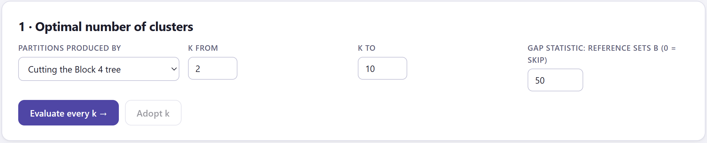
1 2 3 4 5 6| Si… | propone |
|---|---|
| construiste un árbol en el Bloque 4 | Cutting the Block 4 tree: los grupos de cada k son cortes del mismo árbol, anidados y reproducibles. |
| no hay árbol y el coeficiente es euclidiano (o una matriz cargada) | k-means, con 5 arranques y semilla 1. |
| no hay árbol y el coeficiente no es euclidiano | PAM, que trabaja directamente sobre la matriz del Bloque 3. |
La propuesta se actualiza al construir el árbol mientras no hayas evaluado ningún rango. Puedes cambiarla: si piensas usar PAM en el Bloque 5, elige PAM aquí para evaluar el número de grupos con el mismo método.
Unos criterios trabajan con disimilitudes y otros con coordenadas. La silueta, Dunn, el C-index y McClain–Rao usan la matriz del Bloque 3 tal cual. Calinski–Harabasz, Davies–Bouldin, PBM, Ratkowsky–Lance, Hartigan, Krzanowski–Lai, Ball–Hall, el codo y el gap usan coordenadas: la matriz de trabajo del Bloque 2 si el coeficiente es euclidiano, las coordenadas del MDS si cargaste una matriz, y los ejes del PCoA del coeficiente en cualquier otro caso. La casilla Partitions from dice cuál se usó.
| Criterio | Qué mide | Vota por | Maíz |
|---|---|---|---|
| Silhouette | Cohesión frente a separación de cada objeto, promediada (sección 6.7). | el máximo | 3 (0.419) |
| Calinski–Harabasz | Suma de cuadrados entre grupos frente a la de dentro, cada una entre sus grados de libertad. | el máximo | 3 (40.6) |
| Davies–Bouldin | Dispersión de cada grupo y de su vecino más parecido, relativa a la distancia entre sus centroides. | el mínimo | 2 (0.915) |
| Dunn | Distancia mínima entre grupos dividida entre el diámetro máximo de un grupo. | el máximo | 5 (0.515) |
| C-index | Suma de distancias dentro de los grupos, comparada con las más pequeñas y las más grandes posibles. | el mínimo | 4 (0.026) |
| McClain–Rao | Distancia media dentro de los grupos entre la distancia media entre grupos. | el mínimo | 10 (0.454) |
| PBM | Producto de la reducción de la dispersión y la separación máxima entre centroides, penalizado por k. | el máximo | 2 (7.73) |
| Ratkowsky–Lance | Proporción de la variación de cada variable explicada por los grupos, dividida entre √k. | el máximo | 3 (0.469) |
| Ball–Hall | La suma de cuadrados dentro de los grupos por grupo, W/k. | la mayor caída | 2 |
| Krzanowski–Lai | Cuánto mejora W al llegar a k, comparado con lo que mejora al pasar a k + 1. | el máximo | 3 (4.32) |
| Hartigan | Si vale la pena añadir un grupo: H = (Wk/Wk+1 − 1)(n − k − 1). | el primer k con H ≤ 10 | 3 (8.21) |
| Gap statistic | Cuánto más compactos son los grupos que los de datos uniformes (sección 7.2). | la regla del primer error estándar | 4 (1.104) |
| Elbow (WSS) | La suma de cuadrados dentro de los grupos, W, que siempre baja con k. | la rodilla de la curva | 4 (95.8) |
La suma de cuadrados dentro de los grupos siempre baja al añadir grupos, así que ningún criterio puede buscar simplemente el mínimo de W: cada uno la penaliza o la compara de otra forma. Calinski–Harabasz y PBM tienden a favorecer pocos grupos grandes. Dunn y McClain–Rao, que dependen de distancias extremas o de medias que bajan con k, suelen irse al extremo superior del rango. La silueta prefiere a menudo k = 2 cuando un grupo se separa mucho del resto. Por eso el voto importa más que cualquier índice aislado, y un voto repartido también es información: los datos admiten varias resoluciones o no tienen una estructura clara.
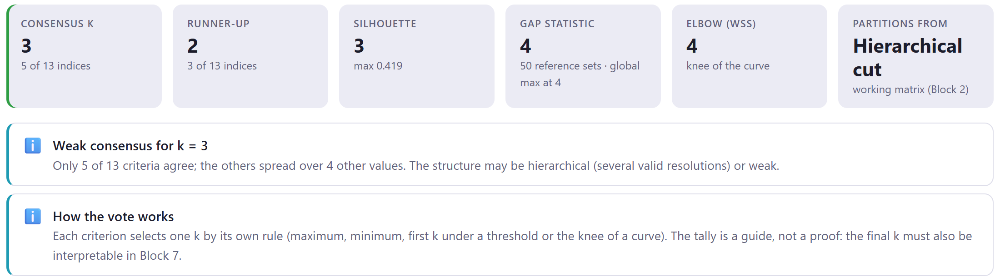
| Casilla | Qué muestra |
|---|---|
| Consensus k | El k con más votos y cuántos de los 13 criterios lo eligieron. Los empates se resuelven hacia el k menor. |
| Runner-up | El segundo k más votado. |
| Silhouette | El k de silueta máxima y su valor. |
| Gap statistic | El k de la regla del primer error estándar, el número de conjuntos de referencia y el k del máximo global. |
| Elbow (WSS) | La rodilla de la curva de W: el punto más alejado de la recta que une sus extremos. |
| Partitions from | El generador de particiones y el espacio de coordenadas. |
| Comprobación | Aparece cuando… |
|---|---|
| ✅ Clear consensus for k = … | el ganador reúne al menos la mitad de los votos; dice si la silueta coincide. |
| ⚠️ Tie between k = … and k = … | los dos más votados empatan. Recomienda el menor, salvo que el grupo extra sea interpretable, y revisar ambos con la estabilidad. |
| ℹ️ Weak consensus for k = … | el ganador no llega a la mitad; la estructura puede ser jerárquica (varias resoluciones válidas) o débil. |
| ⚠️ The consensus k = … is the upper end of the range | el ganador es el último k: varios criterios siguen mejorando hasta donde termina el rango, lo que suele indicar que no hay un número natural de grupos. |
| ⚠️ Low silhouette at the consensus k | la silueta del consenso es menor que 0.25. |
| ⚠️ The gap statistic finds no cluster structure (k = 1) | el gap elige k = 1 (sección 7.2). |
| ℹ️ Gap statistic: first-SE rule chooses… | la regla del gap y su máximo global no coinciden. |
| ℹ️ The silhouette peaks at k = 2 | la silueta prefiere dos grupos; sugiere mirar 3 y 4 y el árbol. |
| ℹ️ How the vote works | siempre: el recuento es una guía, no una prueba, y el k final debe interpretarse en el Bloque 7. |
Debajo de las comprobaciones, la tabla Internal indices by k da el valor de cada criterio para cada k. El encabezado de cada columna indica el k que eligió ese criterio, y su valor aparece resaltado. Las columnas de Hartigan y Krzanowski–Lai quedan vacías en el último k, porque necesitan W en k + 1.
Adopt k = … in Blocks 4 and 5 escribe el k de consenso en el corte del árbol del Bloque 4 y lo aplica, y lo escribe también en el campo Number of clusters k del Bloque 5. La partición del Bloque 5 no se recalcula sola: tienes que volver a pulsar Run → allí. Si prefieres otro k (el segundo lugar, o el de la silueta), cámbialo a mano en esos bloques.
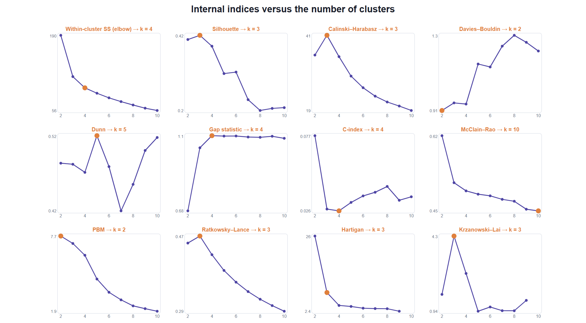
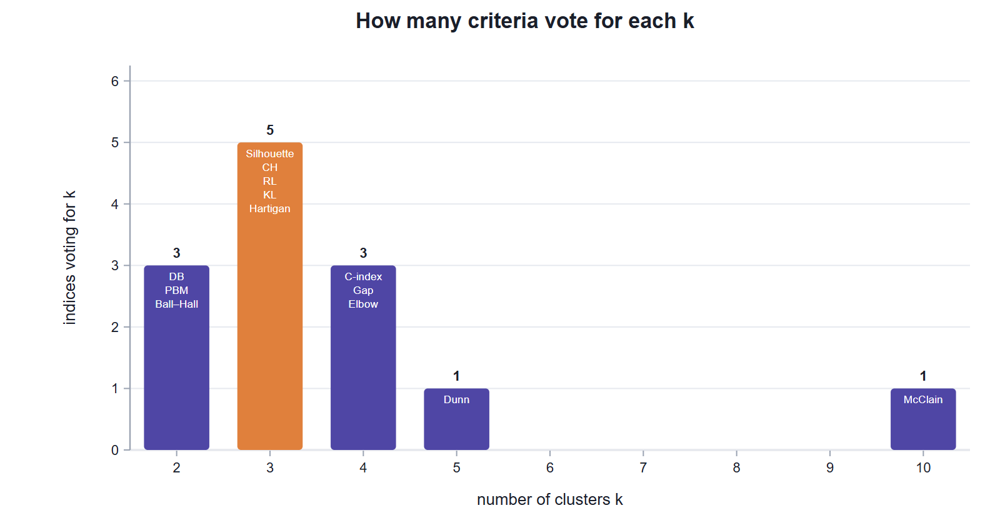
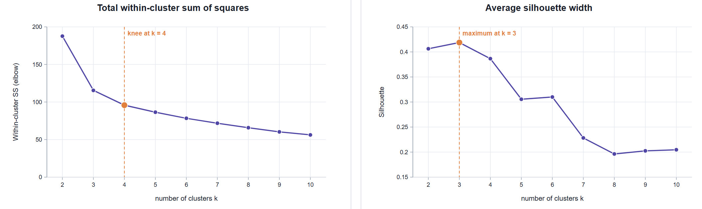
Los demás criterios comparan particiones entre sí; el gap compara cada partición con lo que se obtendría con datos sin grupos. Es el único de los trece que puede concluir que no hay estructura.
Para cada k, la app calcula log Wk con tus datos. Después genera B conjuntos de referencia con el mismo número de objetos, repartidos uniformemente en la caja que ocupan tus coordenadas, los agrupa con el mismo método y promedia su log Wk. El gap es la diferencia: Gap(k) = media de los log Wk de referencia − log Wk. Un gap grande indica grupos mucho más compactos que los del azar.
Como los conjuntos de referencia varían, cada gap tiene un error estándar, sk = desviación estándar × √(1 + 1/B). La regla del primer error estándar elige el menor k tal que Gap(k) ≥ Gap(k + 1) − sk+1: el primer k a partir del cual añadir un grupo ya no mejora de forma apreciable. Cuando el rango empieza en 2, la app evalúa también k = 1; si la regla se detiene ahí, los datos no están más agrupados que los uniformes.
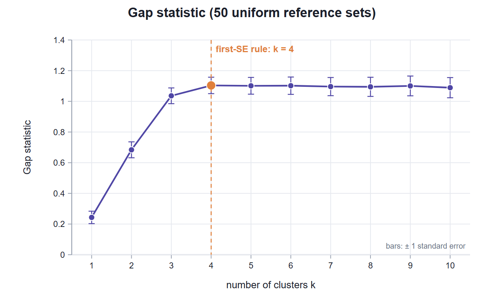
| Forma de la curva | Lectura |
|---|---|
| Sube y se aplana (maíz, figura 7.6) | La rodilla es el número de grupos; la regla la encuentra. |
| Pico nítido y descenso (cuatro grupos simulados) | Estructura fuerte: la regla, el máximo y el voto coinciden. |
| Plana o descendente desde k = 1 (ruido uniforme) | No hay grupos: la regla elige k = 1. |
| Sigue subiendo hasta el final del rango | Estructura anidada o muchos ejes de PCoA; la regla da la resolución más gruesa y el máximo la más fina. |
La caja uniforme de referencia se construye sobre las coordenadas. Con pocos objetos y muchas dimensiones (una matriz de 12 cultivares tiene hasta 11 ejes de MDS) los conjuntos de referencia varían mucho, los errores estándar crecen y la regla se vuelve conservadora: puede quedarse en k = 1 aunque la silueta y la estabilidad muestren grupos claros. La comprobación del gap lo advierte cuando hay menos de 30 objetos. Con 50 conjuntos de referencia el cálculo es rápido; súbelo a 100 o más para reportar el resultado.
Un grupo real debe reaparecer si repites el análisis con una muestra ligeramente distinta de objetos. La tarjeta 2 hace exactamente eso, al estilo de clusterboot: remuestrea, vuelve a agrupar y busca cada grupo original entre los nuevos.
En cada una de las B réplicas se sortean n objetos con reemplazo y se conservan los distintos, alrededor del 63 %. Con ellos se recalcula la partición con el mismo tipo de método y el mismo k. Cada grupo original, restringido a los objetos sorteados, se compara con todos los grupos nuevos mediante el índice de Jaccard (objetos en común entre objetos en cualquiera de los dos) y se queda con el mejor valor. Al final, cada grupo tiene B valores de Jaccard. Su media resume la estabilidad; una réplica con Jaccard menor que 0.5 cuenta como disuelta y una con más de 0.75 como recuperada.
| Elemento | Qué hace |
|---|---|
| Partition | Block 5 partition (si existe) o Tree cut (Block 4). |
| Bootstrap samples B | De 10 a 500; 50 por omisión. La semilla es fija, así que el resultado se repite. |
| Método de las réplicas | PAM y CLARA se reagrupan con PAM; k-means y k-means jerárquico, con k-means; el corte del árbol y los demás métodos del Bloque 5 (fuzzy, mezclas, DBSCAN, espectral), con el enlace del Bloque 4. |
| Ruido de DBSCAN | Se trata como un grupo más durante el remuestreo, y un aviso lo indica. |
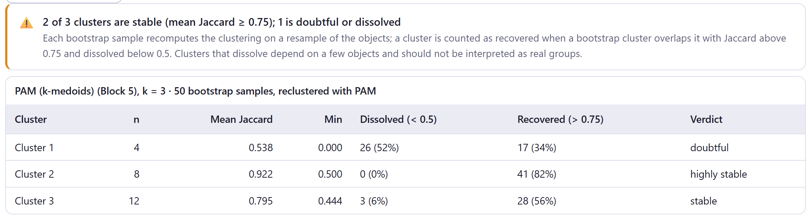
| Jaccard medio | Veredicto | Qué hacer |
|---|---|---|
| ≥ 0.85 | highly stable | Interprétalo con confianza. |
| 0.75 a 0.85 | stable | Interprétalo. |
| 0.60 a 0.75 | some pattern | Hay algo, pero sus límites dependen de la muestra. |
| 0.50 a 0.60 | doubtful | No lo describas como un grupo sin más evidencia. |
| < 0.50 | dissolved | No es un grupo: depende de unos pocos objetos. |
La comprobación de arriba cuenta los grupos estables (≥ 0.75), los que solo muestran algún patrón y los dudosos o disueltos (< 0.6). Se vuelve una advertencia si hay alguno de estos últimos.
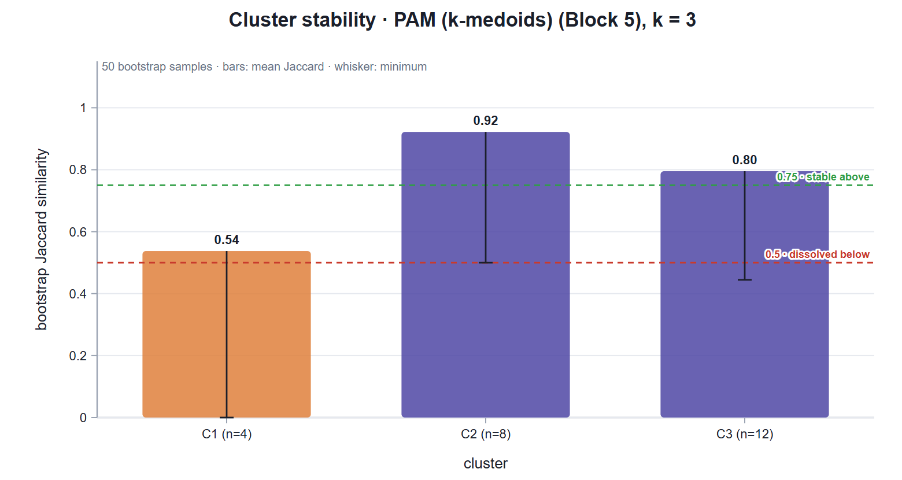
Un grupo muy estable puede ser un artefacto sistemático: si el método siempre corta los datos por el mismo sitio, el corte se repite en todas las réplicas. Por eso la estabilidad complementa, pero no sustituye, al número de grupos y a la interpretación. Al revés sí es concluyente: un grupo que se disuelve casi nunca es un grupo real.
La tarjeta 3 responde una pregunta distinta: si midieras otras variables del mismo tipo, ¿aparecería la misma rama? Remuestrea las variables, no los objetos, a varias escalas, al estilo de pvclust, y da a cada rama del árbol dos valores: BP y AU.
En el bootstrap ordinario se sortean tantas variables como hay, con reemplazo, se rehace el árbol y se cuenta en cuántas réplicas aparece cada rama: es su probabilidad bootstrap, BP. BP está sesgada y subestima el soporte de las ramas reales. El bootstrap multiescala repite el sorteo con 10 tamaños de muestra, de 0.5 a 1.4 veces el número de variables, y observa cómo cambia la frecuencia de cada rama con la proporción r de variables sorteadas. Con las escalas en que la rama no aparece siempre ni nunca, ajusta por mínimos cuadrados ponderados el modelo z(r) = v√r + c/√r, donde z es el cuantil normal de 1 − BP(r), y extrapola: AU = 1 − Φ(v − c) es la probabilidad aproximadamente insesgada, y BP = 1 − Φ(v + c). Una rama con AU ≥ 95 % está fuertemente respaldada por los datos.
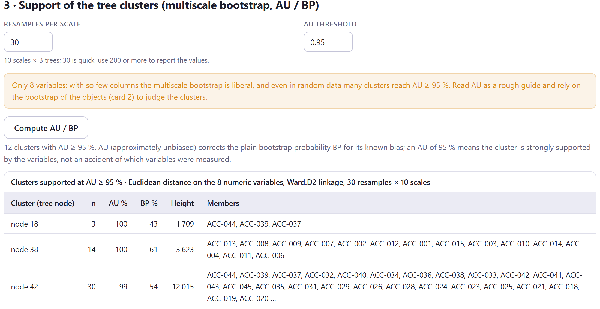
| Elemento | Detalle |
|---|---|
| Resamples per scale | De 10 a 500; 30 por omisión. Se construyen 10 × B árboles; 30 es rápido, usa 200 o más para reportar los valores. |
| AU threshold | El AU mínimo para que una rama entre en la tabla y reciba un recuadro en la figura; 0.95 por omisión. |
| Variables y distancia | Las variables numéricas de la matriz de trabajo (sin las columnas indicadoras de los nominales), con distancia euclidiana y el enlace del Bloque 4. |
| Cuándo no está disponible | Se oculta con una matriz cargada (no hay variables); se niega con más de 200 objetos o menos de 3 variables. |
| ℹ️ Distancia distinta | Si tu coeficiente no es euclidiano, avisa de que este árbol difiere del tuyo. |
| ⚠️ Only … variables | Con menos de 15 variables el método es liberal: incluso con datos al azar muchas ramas alcanzan AU ≥ 95 %. Usa el AU como guía y juzga los grupos con la tarjeta 2. |
El bootstrap multiescala supone que las variables son muchas e intercambiables. Al comprobarlo con datos uniformes de 40 objetos, la proporción de ramas con AU ≥ 95 % fue de más de la mitad con 6 variables, de un tercio con 8, de una de cada cinco con 10 y de una de cada diez con 15; con 30 variables o más se acerca a lo esperado. Por eso, con el maíz o los suelos (8 variables numéricas), las 12 y 19 ramas "respaldadas" incluyen muchas parejas sin interés. Con decenas o cientos de variables (expresión, marcadores, especies) el AU es la herramienta adecuada.
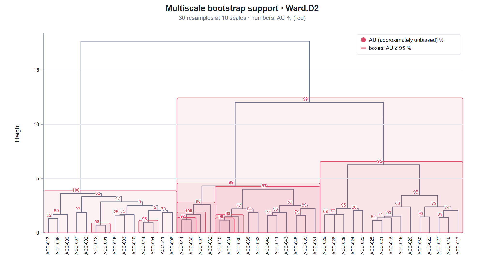
Si tienes una agrupación conocida (especies, regiones, tratamientos) o dos particiones que quieres contrastar, la tarjeta 4 mide cuánto coinciden. No hace falta que los grupos tengan los mismos nombres ni el mismo número: los índices comparan cómo se reparten los pares de objetos.
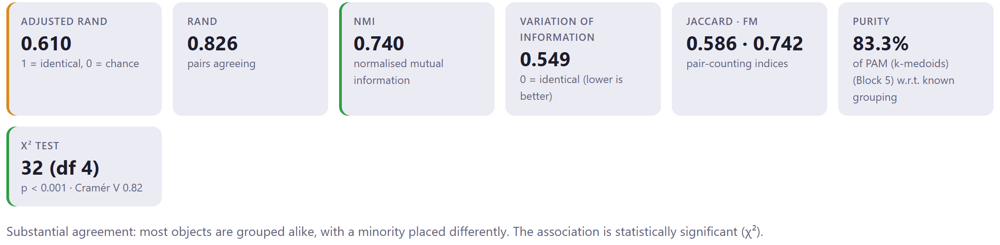
| Casilla | Qué mide | Escala |
|---|---|---|
| Adjusted Rand | Proporción de pares de objetos tratados igual por las dos agrupaciones (juntos en ambas o separados en ambas), corregida por el acuerdo esperado al azar. | 1 idénticas, 0 azar; verde > 0.7, ámbar > 0.4. |
| Rand | La misma proporción sin corregir; con muchos grupos se infla. | 0 a 1. |
| NMI | Información mutua normalizada: cuánto dice una agrupación de la otra. | 0 a 1; verde > 0.7. |
| Variation of information | Información que se pierde y se gana al pasar de una agrupación a la otra. | 0 idénticas; menor es mejor. |
| Jaccard · FM | Pares juntos en ambas entre pares juntos en alguna (Jaccard), y la media geométrica de las dos proporciones (Fowlkes–Mallows). | 0 a 1. |
| Purity | Proporción de objetos que pertenecen a la clase mayoritaria de su grupo. | Sube con el número de grupos. |
| χ² test | Independencia de la tabla cruzada, con la V de Cramér. | Verde si p < 0.05. |
| ARI | Frase |
|---|---|
| > 0.8 | The two labellings are essentially the same partition. |
| 0.5 a 0.8 | Substantial agreement: la mayoría de los objetos se agrupan igual, con una minoría en otro sitio. |
| 0.2 a 0.5 | Partial agreement: estructuras relacionadas pero distintas. |
| ≤ 0.2 | The labellings are unrelated: lo que darían etiquetas al azar. |
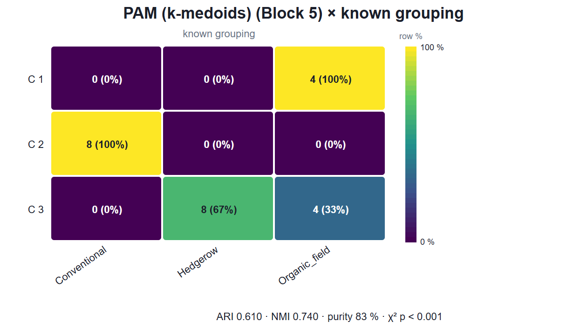
Los selectores Compare y with ofrecen el corte del árbol, la partición del Bloque 5 y la agrupación conocida (la columna de grupos del Bloque 1). Por omisión comparan la partición del Bloque 5 con la agrupación conocida o, si no la hay, con el árbol. No elijas la misma dos veces. Con DBSCAN, el ruido cuenta como un grupo más, el 0. La pureza favorece a la partición con más grupos; el ARI es el índice que conviene reportar.
La tarjeta 5 sigue la idea de clValid: en lugar de fijar un k y un método, recorre el rango de la tarjeta 1 con el árbol (con el enlace del Bloque 4), k-means (5 arranques, semilla 1) y PAM, y puntúa cada combinación con tres medidas.
| Medida | Qué mide | Mejor |
|---|---|---|
| Connectivity | Para cada objeto, cuántos de sus 10 vecinos más cercanos quedaron en otro grupo; el vecino j-ésimo pesa 1/j. Mide si los grupos respetan la vecindad. | el mínimo (0 a ∞) |
| Dunn | Distancia mínima entre grupos entre el diámetro máximo. | el máximo |
| Silhouette | La silueta media sobre la matriz del Bloque 3. | el máximo |
La conectividad casi siempre es mínima con dos grupos: cuantos menos grupos, menos vecinos quedan del otro lado. Dunn depende de dos distancias extremas y oscila mucho; suele premiar un k alto en el que un grupo pequeño y aislado sube la separación mínima. La silueta es la más equilibrada de las tres. Por eso la tabla de óptimos rara vez da un ganador único: léela como un mapa de compromisos, y usa la curva de la silueta para decidir el método, no el k, que ya decidiste en la tarjeta 1.
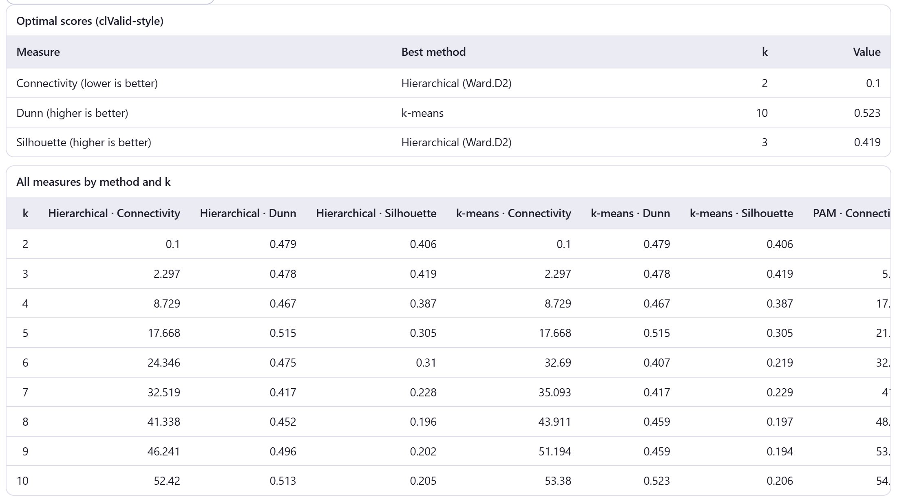
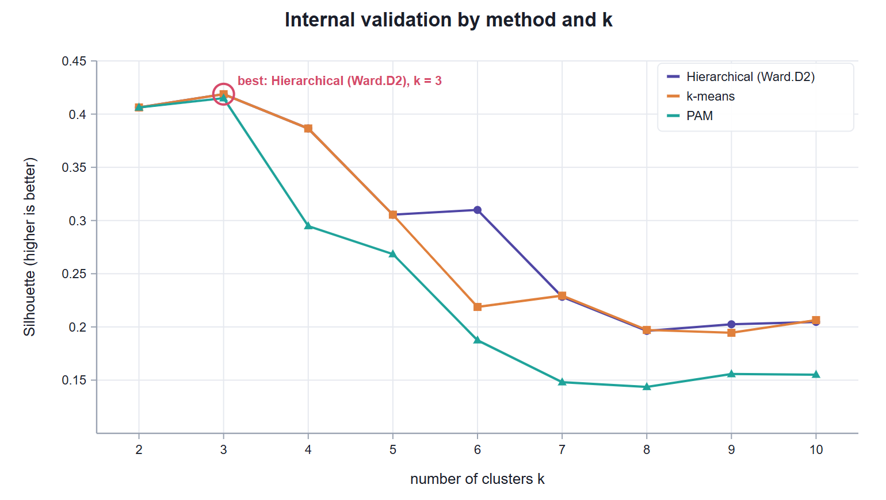
El bloque produce hasta nueve figuras, todas editables y exportables con el estudio de figuras (capítulo 2). Las cinco de la tarjeta 1 aparecen juntas; la del gap, solo si B es mayor que cero.
| Figura | Qué muestra | Controles propios |
|---|---|---|
| Every criterion at a glance | Un panel por criterio frente a k (figura 7.3). | Título y paleta. |
| Consensus of the criteria | Votos por k (figura 7.4). Si el gap vota por k = 1, lo indica en una línea. | Show index names inside the bars, título y paleta. |
| Elbow · Average silhouette by k | Las curvas de W y de la silueta (figura 7.5). | Título y paleta. |
| Gap statistic | El gap con ± 1 error estándar, desde k = 1 (figura 7.6). | Título y paleta. |
| Bootstrap stability of the clusters | Jaccard medio y mínimo por grupo (figura 7.8). | Dissolved colour, título y paleta. |
| Tree with bootstrap support | El árbol con AU y BP (figura 7.10). | Umbral de los recuadros; mostrar AU y BP; tamaño de los valores; etiquetas de las hojas y su tamaño; grosor de las ramas; colores de AU, BP y recuadros. |
| Cross-table | La tabla cruzada coloreada (figura 7.12). | Colour map y Show row percentages. |
| Comparison of algorithms over k | Una medida por método y k (figura 7.14). | Measure (silueta, Dunn o conectividad), paleta y posición de la leyenda. |
| Cálculo | Valor |
|---|---|
| Particiones con k-means (tarjetas 1 y 5) | 5 arranques, semilla 1. |
| Conjuntos de referencia del gap | Semilla 2026. Con más de 150 objetos, o con k-means como generador, se agrupan con k-means de 2 arranques. |
| Estabilidad | Semilla 77. |
| Bootstrap multiescala | Escalas 0.5, 0.6, …, 1.4 del número de variables; semilla 13. |
| Conectividad | 10 vecinos más cercanos. |
Cada vez que el Bloque 3 recalcula la matriz, los resultados de este bloque se borran y el Bloque 7 se deshabilita. El informe del Bloque 8 incluye lo que hayas corrido aquí: el k de consenso con sus votos, la estabilidad de cada grupo, el bootstrap multiescala y el acuerdo externo.
Con cada ejemplo preparado como en los capítulos anteriores (UPGMA en el Bloque 4 para la presencia de especies y los insectos, y el método propuesto en el Bloque 5), la tabla 7.13 resume lo que dice el Bloque 6 con sus valores iniciales. Las prácticas se detienen en cada caso.
| Ejemplo | Consenso | Silueta | Gap | Jaccard medio | Observación |
|---|---|---|---|---|---|
| Razas de maíz | 3 (5/13) | 3 · 0.419 | 4 | 1.00 · 0.99 · 0.99 | Consenso débil; tres grupos muy estables. |
| Presencia de especies | 2 = 3 (4/13) | 3 · 0.333 | 3 | 0.98 · 1.00 · 0.98 | Empate; los tres hábitats son interpretables. |
| Abundancia de insectos | 2 (10/13) | 2 · 0.494 | 2 | 0.54 · 0.92 · 0.80 | Convencionales frente al resto. |
| Perfiles de suelo | 3 (7/13) | 3 · 0.607 | 3 | 0.93 · 0.89 (k = 2) | El voto corrige el corte en dos. |
| Matriz de distancias | 3 (8/13) | 3 · 0.665 | 1 | 0.98 · 0.98 · 0.99 | El gap es conservador con 12 objetos. |
| Cuatro grupos simulados | 4 (10/13) | 4 · 0.714 | 4 | 1.00 en los cuatro | Todo coincide. |
| Ruido uniforme | 10 (5/13) | 10 · 0.197 | 1 | 0.56 · 0.60 · 0.64 | Consenso en el extremo; no hay grupos. |
El Jaccard medio es el de la partición del Bloque 5 con 50 réplicas y el k de los capítulos anteriores (3, salvo los suelos y los cuatro grupos simulados).
Un voto repartido no significa grupos débiles. Con el maíz, cinco criterios eligen 3, tres eligen 2 y tres eligen 4: el árbol tiene una primera división en dos (costa frente al resto), y el gap y el codo sugieren un cuarto grupo, como la mezcla gaussiana del capítulo 6. Pero los tres grupos regionales reaparecen en todas las réplicas y coinciden exactamente con las regiones. El número de grupos se decide con el conjunto de la evidencia: el voto, la forma de las curvas, la estabilidad y el significado.
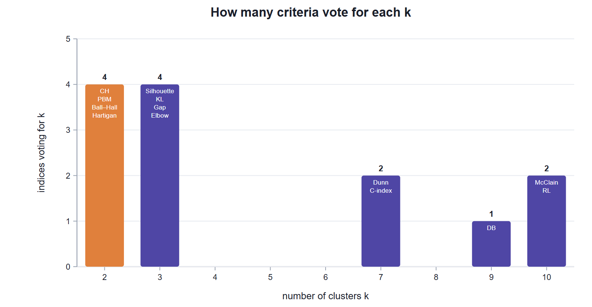
La regla del k menor es una convención, no una recomendación ciega; la comprobación lo dice: prefiere el menor salvo que el grupo extra sea interpretable. Aquí lo es: tres hábitats y tres grupos estables que coinciden con ellos (ARI 1.000, capítulo 6). Cuando el voto empata, deciden la estabilidad y el conocimiento del sistema. Y el AU recuerda que en la tarjeta 3 las ramas se evalúan con distancia euclidiana sobre ceros y unos, no con tu Jaccard: el aviso azul lo señala.
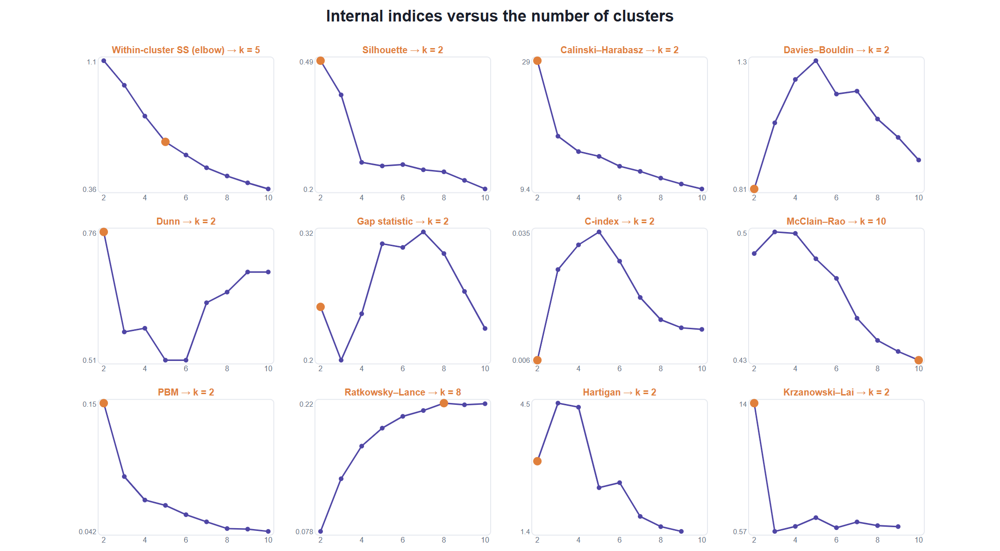
La estructura dominante de esta comunidad es el manejo: los campos convencionales son muy distintos de todo lo demás, y esa división es la que ven casi todos los criterios y la que resiste todas las réplicas. Los tres paisajes existen, pero los campos orgánicos se parecen a los setos y su grupo es frágil. Ninguna de las dos respuestas es incorrecta: k = 2 describe la estructura más fuerte y k = 3 la del diseño del muestreo. Repórtalo así, con la estabilidad de cada grupo, en lugar de forzar una sola cifra.
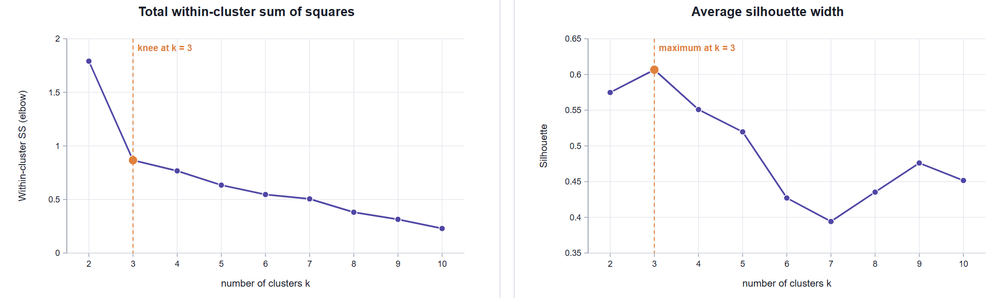
La sugerencia de corte del Bloque 4 se basa en los saltos de altura del árbol, y el mayor salto no siempre marca el número de grupos más útil. Aquí dos grupos eran "razonables" y estables, pero el voto, el codo, la silueta y el gap señalaban tres, y con tres la estabilidad se vuelve perfecta. Evaluar el rango completo antes de interpretar evita quedarse con la primera partición plausible.
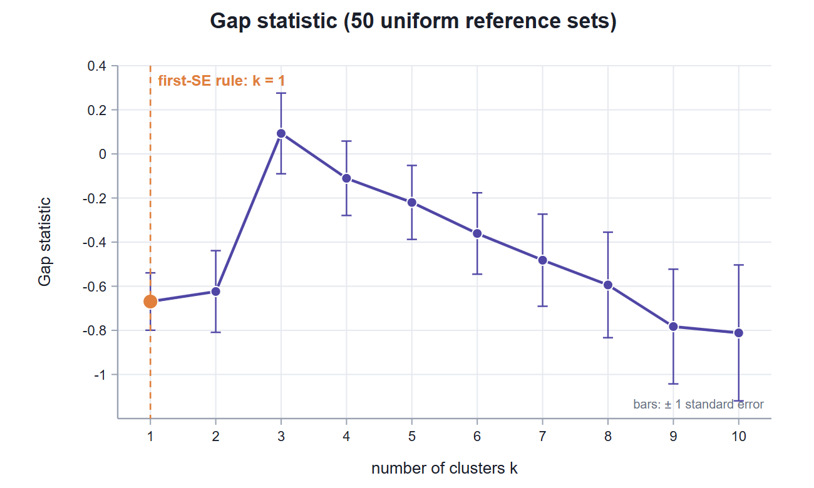
El gap aplica su regla con honestidad, pero con 12 objetos repartidos en 11 dimensiones los conjuntos de referencia son muy variables y los errores estándar enormes. Un solo criterio discordante no invalida el resto: la silueta alta, el voto amplio y la estabilidad casi perfecta sostienen los tres grupos. Lo correcto es reportar que el gap no fue concluyente con tan pocos objetos, no esconderlo.
Cuando la estructura es fuerte, todas las herramientas del bloque dicen lo mismo, y ese acuerdo es lo que debes buscar en tus datos. Incluso aquí, con solo 5 variables, el bootstrap multiescala infla el soporte de las ramas pequeñas: su advertencia no depende de que los grupos sean buenos, sino de cuántas variables hay.
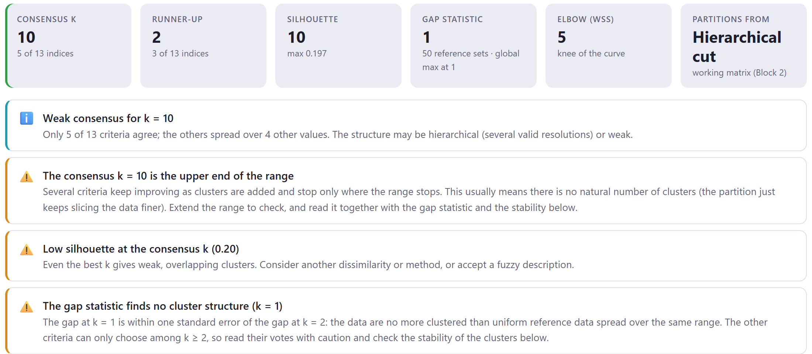
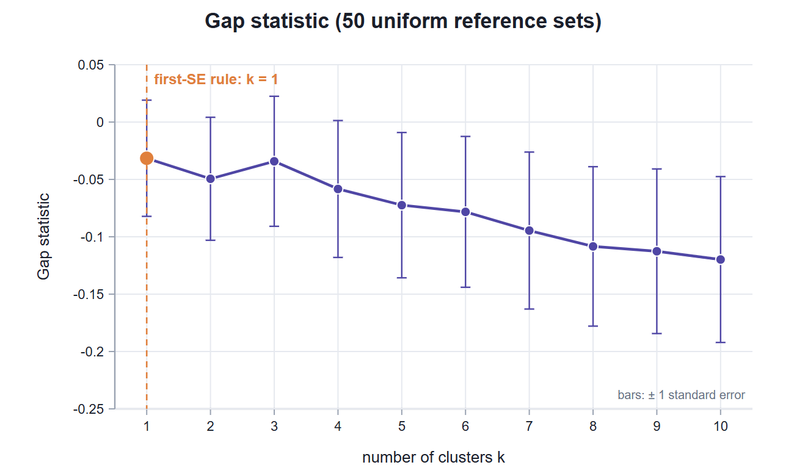
El Bloque 6 existe para este caso. Todos los métodos de los Bloques 4 y 5 dieron grupos, y los criterios de la tarjeta 1, obligados a elegir un k ≥ 2, eligieron uno. Solo la combinación de evidencias revela lo que pasa: silueta baja, voto en el borde, gap en 1 y grupos que se deshacen al remuestrear. Cuando ves ese patrón en tus datos, la conclusión correcta es un gradiente continuo, no una tipología.
En la sección de métodos: el rango de k, el generador de particiones y los criterios usados; el número de conjuntos de referencia del gap; el número de réplicas de la estabilidad y el método de reagrupamiento; si usaste el bootstrap multiescala, las réplicas por escala y el número de variables; y los índices de acuerdo externo. En resultados: el k elegido con sus votos y los del segundo lugar, el Jaccard medio de cada grupo y el ARI con la agrupación conocida. Por ejemplo: "Se evaluó k = 2–10 con 13 criterios; k = 3 recibió 5 votos (k = 2 y k = 4, 3 cada uno). Los tres grupos fueron muy estables en 50 réplicas bootstrap (Jaccard medio 0.99–1.00) y coincidieron con las regiones de origen (ARI = 1.00)". El párrafo del Bloque 8 lo redacta con tus valores.
Con un número de grupos justificado y grupos que resisten el remuestreo, queda la parte que da sentido al análisis: describir cada grupo. El siguiente capítulo presenta los perfiles de los grupos, las variables, categorías y especies que caracterizan a cada uno, las reglas de clasificación del análisis discriminante y la asignación de objetos nuevos.